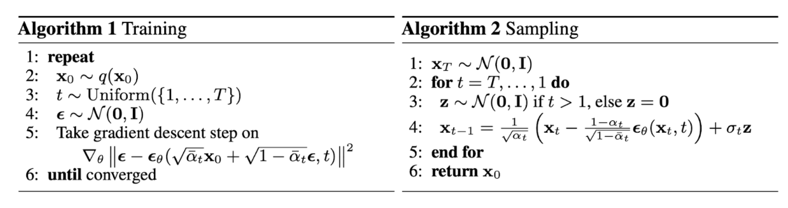

From VAE to Diffusion Model
Varational Autoencoder (VAE)
In the normal auto-encoder (AE) model, for a data distribution p ( x ) p(\boldsymbol{x}) p ( x ) x \boldsymbol x x q ( z ∣ x ) q(\boldsymbol z|\boldsymbol x) q ( z ∣ x ) p ( x ∣ z ) p(\boldsymbol x|\boldsymbol z) p ( x ∣ z ) x \boldsymbol x x q ( z ∣ x ) q(\boldsymbol z | \boldsymbol x) q ( z ∣ x )
L a e ( x ) = E q ( z ∣ x ) [ p ( x ∣ z ) ] + P α \mathcal{L}_{\mathtt ae}(x) = \mathbf{E}_{q(\boldsymbol{z} | \boldsymbol{x})} [ p(\boldsymbol{x} | \boldsymbol{z})] + P_{\alpha} L a e ( x ) = E q ( z ∣ x ) [ p ( x ∣ z )] + P α
where P α P_{\alpha} P α
Based on AE, varational AE (VAE) derivied the loss function in a probablistic manner. We starts from log p ( x ) \log p(\boldsymbol x) log p ( x )
log p ( x ) = log ∫ p ( x ∣ z ) p ( z ) d z = log ∫ p ( x ∣ z ) p ( z ) q ( z ∣ x ) q ( z ∣ x ) d z ≥ ∫ log p ( x ∣ z ) p ( z ) q ( z ∣ x ) q ( z ∣ x ) d z = E q [ log p ( x ∣ z ) ] − ∫ log p ( z ) q ( z ∣ x ) q ( z ∣ x ) d z = E q [ log p ( x ∣ z ) ] + K L ( q ( z ∣ x ) ∣ ∣ p ( z ) ) \begin{align}
\log p(\boldsymbol x) &= \log \int p(\boldsymbol x| \boldsymbol z) p(\boldsymbol{z}) d\boldsymbol{z} \\
& = \log \int \frac{p(\boldsymbol{x}|\boldsymbol{z}) p(\boldsymbol{z})}{q(\boldsymbol{z} | \boldsymbol{x})} q(\boldsymbol{z} | \boldsymbol{x}) d\boldsymbol{z} \\
& \geq \int \log \frac{p(\boldsymbol{x} | \boldsymbol{z})p(\boldsymbol{z})}{q(\boldsymbol{z}|\boldsymbol{x})} q(\boldsymbol{z}|\boldsymbol{x}) d\boldsymbol{z} \\
& = \mathbf{E}_q [\log p(\boldsymbol{x} | \boldsymbol{z})] - \int \log\frac{p(\boldsymbol{z})}{q(\boldsymbol{z}|\boldsymbol{x})} q(\boldsymbol{z} | \boldsymbol{x}) d\boldsymbol{z} \\
& = \mathbf{E}_q [\log p(\boldsymbol{x} | \boldsymbol{z})] + \mathrm{KL}(q(\boldsymbol{z} | \boldsymbol{x}) || p(\boldsymbol{z}))
\end{align} log p ( x ) = log ∫ p ( x ∣ z ) p ( z ) d z = log ∫ q ( z ∣ x ) p ( x ∣ z ) p ( z ) q ( z ∣ x ) d z ≥ ∫ log q ( z ∣ x ) p ( x ∣ z ) p ( z ) q ( z ∣ x ) d z = E q [ log p ( x ∣ z )] − ∫ log q ( z ∣ x ) p ( z ) q ( z ∣ x ) d z = E q [ log p ( x ∣ z )] + KL ( q ( z ∣ x ) ∣∣ p ( z ))
The first term in the above equation is the log-likelihood of decoder output, while the second term minimize the KL divergence between encoder output and the target encoder distribution. Now the P α P_\alpha P α
Denoise Diffusion Probablistic Model (DDPM)
Forward (diffusion) and Backward (denoise) process
In the DDPM, we start from x 0 \boldsymbol x_0 x 0 t t t
x t = α t x t − 1 + β t ε t \boldsymbol x_{t} = \alpha_t\,\boldsymbol x_{t-1} + \beta_t\,\boldsymbol \varepsilon_t x t = α t x t − 1 + β t ε t
where ε t \boldsymbol\varepsilon_t ε t α t 2 + β t 2 = 1 \alpha_t^2 + \beta_t^2 = 1 α t 2 + β t 2 = 1 x t \boldsymbol x_t x t
Forward Process : given x t − 1 \boldsymbol x_{t-1} x t − 1 p ( x t ∣ x t − 1 ) p(\boldsymbol x_t | \boldsymbol x_{t-1}) p ( x t ∣ x t − 1 ) α t x t − 1 \alpha_t \, \boldsymbol x_{t-1} α t x t − 1 β t 2 I \beta_t^2 \boldsymbol I β t 2 I
Fast Forward Process : A nice property of DDPM is that the conditional distribution of x t \boldsymbol x_{t} x t x 0 \boldsymbol x_{0} x 0
x t = α t x t − 1 + β ε t = α t α t − 1 . . . α 1 x 0 + ( α t . . . α 2 ) β 1 ε 1 + . . . + β t ε t \begin{align}
\boldsymbol{x}_t &= \alpha_t \boldsymbol{x}_{t-1} + \beta \boldsymbol{\varepsilon_t} \nonumber\\
& = \alpha_t \alpha_{t-1}...\alpha_1 \boldsymbol{x}_0 + (\alpha_t ... \alpha_2)\beta_1 \boldsymbol \varepsilon_1 + ... + \beta_t \boldsymbol\varepsilon_t
\end{align} x t = α t x t − 1 + β ε t = α t α t − 1 ... α 1 x 0 + ( α t ... α 2 ) β 1 ε 1 + ... + β t ε t
x t = α ‾ t x 0 + β ‾ t ε t ‾ \begin{align}
\boldsymbol{x}_t = \overline{\alpha}_t \boldsymbol x_0 + \overline{\beta}_t \overline{\boldsymbol{\varepsilon}_t}
\end{align} x t = α t x 0 + β t ε t
where α ‾ t = ∏ τ = 1 t α τ \overline{\alpha}_t = \prod_{\tau=1}^{t}\alpha_\tau α t = ∏ τ = 1 t α τ β ‾ t = 1 − α ‾ t 2 \overline{\beta}_t = \sqrt{1- \overline\alpha_t^2} β t = 1 − α t 2 ε ‾ t \overline{\boldsymbol\varepsilon}_t ε t
Reverse Process : However, we don't know the conditional distribution of x t − 1 \boldsymbol{x}_{t-1} x t − 1 x t \boldsymbol x_{t} x t β t \beta_t β t θ \theta θ x t \boldsymbol x_t x t t t t
p ( x t − 1 ∣ x t ) = N ( x t − 1 ; μ θ ( x t , t ) , Σ θ ( x t , t ) ) p(\boldsymbol x_{t-1} | \boldsymbol x_{t}) = \mathcal{N}(\boldsymbol x_{t-1}; \boldsymbol \mu_{\theta}(\boldsymbol x_t, t), \boldsymbol \Sigma_{\theta}(\boldsymbol x_t, t)) p ( x t − 1 ∣ x t ) = N ( x t − 1 ; μ θ ( x t , t ) , Σ θ ( x t , t ))
Conditional Reverse Process : Though we don't know the explicit form of reverse probability, a nice property of diffusion model is that p ( x t − 1 ∣ x t , x 0 ) p(\boldsymbol x_{t-1} | \boldsymbol{x}_t, \boldsymbol{x}_0) p ( x t − 1 ∣ x t , x 0 )
p ( x t − 1 ∣ x t , x 0 ) = p ( x t , x t − 1 ∣ x 0 ) p ( x t ∣ x 0 ) = p ( x t ∣ x t − 1 ) p ( x t − 1 ∣ x 0 ) p ( x t ∣ x 0 ) \begin{align*}
p(\boldsymbol x_{t-1} | \boldsymbol{x}_t, \boldsymbol{x}_0) &=
\frac{p(\boldsymbol{x}_t, \boldsymbol{x}_{t-1} | \boldsymbol{x}_0)}{p(\boldsymbol x_t | \boldsymbol{x}_0)} = \frac{p(\boldsymbol{x}_t | \boldsymbol{x}_{t-1}) p (\boldsymbol x_{t-1} | \boldsymbol{x}_0)}{p(\boldsymbol x_t | \boldsymbol{x}_0)}
\end{align*} p ( x t − 1 ∣ x t , x 0 ) = p ( x t ∣ x 0 ) p ( x t , x t − 1 ∣ x 0 ) = p ( x t ∣ x 0 ) p ( x t ∣ x t − 1 ) p ( x t − 1 ∣ x 0 )
Since we know that p ( x τ ∣ x 0 ) p(\boldsymbol x_\tau | \boldsymbol{x}_0) p ( x τ ∣ x 0 ) N ( x τ ; α ‾ τ x 0 , β ‾ τ I ) \mathcal N(\boldsymbol{x}_\tau; \overline\alpha_{\tau} \boldsymbol{x}_0, \overline{\beta}_\tau \boldsymbol{I} ) N ( x τ ; α τ x 0 , β τ I ) τ > 1 \tau > 1 τ > 1 Forward Process , we then have the following equations:
p ( x t − 1 ∣ x t , x 0 ) ∼ exp ( − 1 2 β t 2 ( x t − α t x t − 1 ) 2 ) ⋅ exp ( − 1 2 β ‾ t − 1 2 ( x t − 1 − α ‾ t − 1 x 0 ) 2 ) ⋅ exp ( 1 2 β ‾ t 2 ( x t − α ‾ t x 0 ) 2 ) \begin{align*}
p(\boldsymbol x_{t-1} | \boldsymbol{x}_t, \boldsymbol{x}_0) \sim
\exp(-\frac{1}{2\beta_t^2}(\boldsymbol{x}_t - \alpha_t \boldsymbol{x}_{t-1})^2)
\cdot
\exp(-\frac{1}{2\overline\beta_{t-1}^2}(\boldsymbol{x}_{t-1} - \overline\alpha_{t-1}\boldsymbol{x}_0)^2)\cdot
\exp(\frac{1}{2\overline\beta_t^2}(\boldsymbol{x}_t - \overline\alpha_t \boldsymbol{x}_0)^2)
\end{align*} p ( x t − 1 ∣ x t , x 0 ) ∼ exp ( − 2 β t 2 1 ( x t − α t x t − 1 ) 2 ) ⋅ exp ( − 2 β t − 1 2 1 ( x t − 1 − α t − 1 x 0 ) 2 ) ⋅ exp ( 2 β t 2 1 ( x t − α t x 0 ) 2 )
Note that the above equation can be written as:p ( x t − 1 ∣ x t , x 0 ) ∼ exp ( − 1 2 ( a x t − 1 2 − 2 b x t − 1 + c ) ) ∼ exp ( − 1 2 ⋅ 1 / a ( x t − 1 − b a ) 2 ) \begin{align*}
p(\boldsymbol x_{t-1} | \boldsymbol{x}_t, \boldsymbol{x}_0) &\sim
\exp(-\frac{1}{2}(a \boldsymbol{x}_{t-1}^2 - 2b \boldsymbol x_{t-1}+c))\\
& \sim \exp(-\frac{1}{2\cdot 1/a}(\boldsymbol{x}_{t-1} - \frac{b}{a})^2)
\end{align*} p ( x t − 1 ∣ x t , x 0 ) ∼ exp ( − 2 1 ( a x t − 1 2 − 2 b x t − 1 + c )) ∼ exp ( − 2 ⋅ 1/ a 1 ( x t − 1 − a b ) 2 ) α t 2 + β t 2 = 1 \alpha_t^2 + \beta_t^2 = 1 α t 2 + β t 2 = 1 α ‾ t 2 + β ‾ t 2 = 1 \overline\alpha_t^2 + \overline\beta_t^2=1 α t 2 + β t 2 = 1 α ‾ t = α ‾ t − 1 α t \overline\alpha_t = \overline\alpha_{t-1} \alpha_t α t = α t − 1 α t
a = α t 2 β t 2 + 1 β ‾ t − 1 2 = α t 2 ( 1 − α ‾ t − 1 2 ) + β t 2 β t 2 ( 1 − α ‾ t − 1 2 ) = 1 − α ‾ t 2 β t 2 ( 1 − α ‾ t − 1 2 ) = β ‾ t 2 β t 2 β ‾ t − 1 2 = ( β ‾ t β t β ‾ t − 1 ) 2 b = α t β t 2 x t + α ‾ t − 1 β ‾ t − 1 2 x 0 b a = α t ( 1 − α ‾ t − 1 2 ) 1 − α ‾ t 2 x t + β t 2 α ‾ t − 1 1 − α ‾ t 2 x 0 = α t β ‾ t − 1 2 β ‾ t 2 x t + α ‾ t − 1 β t 2 β ‾ t 2 x 0 \begin{align*}
a &= \frac{\alpha_t^2}{\beta_t^2} + \frac{1}{\overline\beta_{t-1}^2}
= \frac{\alpha_t^2(1-\overline\alpha_{t-1}^2) + \beta_t^2}{\beta_t^2 (1- \overline\alpha_{t-1}^2)} = \frac{1-\overline\alpha_t^2}{\beta_t^2 (1- \overline\alpha_{t-1}^2)} = \frac{\overline\beta_t^2}{\beta_t^2 \overline\beta_{t-1}^2} = (\frac{\overline\beta_t}{\beta_t \overline\beta_{t-1}})^2
\\
b &= \frac{\alpha_t}{\beta_t^2} \boldsymbol{x}_t + \frac{\overline\alpha_{t-1}}{\overline\beta_{t-1}^2} \boldsymbol{x}_0 \\
\frac{b}{a} &= \frac{\alpha_t (1 - \overline\alpha_{t-1}^2)}{1- \overline\alpha_t^2} \boldsymbol x_t + \frac{\beta_t^2 \overline\alpha_{t-1}}{1- \overline\alpha_t^2} \boldsymbol{x}_0 \\
&= \frac{\alpha_t \overline\beta_{t-1}^2}{\overline\beta_t^2} \boldsymbol{x}_t + \frac{\overline\alpha_{t-1}\beta_t^2}{\overline\beta_t^2}\boldsymbol{x}_0
\end{align*} a b a b = β t 2 α t 2 + β t − 1 2 1 = β t 2 ( 1 − α t − 1 2 ) α t 2 ( 1 − α t − 1 2 ) + β t 2 = β t 2 ( 1 − α t − 1 2 ) 1 − α t 2 = β t 2 β t − 1 2 β t 2 = ( β t β t − 1 β t ) 2 = β t 2 α t x t + β t − 1 2 α t − 1 x 0 = 1 − α t 2 α t ( 1 − α t − 1 2 ) x t + 1 − α t 2 β t 2 α t − 1 x 0 = β t 2 α t β t − 1 2 x t + β t 2 α t − 1 β t 2 x 0
Therefore, we can see that p ( x t − 1 ∣ x t , x 0 ) p(\boldsymbol x_{t-1} | \boldsymbol{x}_t, \boldsymbol{x}_0) p ( x t − 1 ∣ x t , x 0 ) b a \frac{b}{a} a b 1 a \sqrt{\frac{1}{a}} a 1 x t − 1 ∣ x t , x 0 \boldsymbol{x}_{t-1} | \boldsymbol{x}_t, \boldsymbol{x}_0 x t − 1 ∣ x t , x 0
x t − 1 = α t β ‾ t − 1 2 β ‾ t 2 x t + β t 2 α ‾ t − 1 β ‾ t 2 x 0 + β t β ‾ t − 1 β ‾ t ε \begin{align*}
\boldsymbol x_{t-1} &= \frac{\alpha_t\overline\beta_{t-1}^2}{\overline\beta_t^2} \boldsymbol x_t + \frac{\beta_t^2 \overline\alpha_{t-1}}{\overline\beta_t^2} \boldsymbol{x}_0 + \frac{\beta_t \overline\beta_{t-1}}{\overline{\beta}_t} \boldsymbol\varepsilon
\end{align*} x t − 1 = β t 2 α t β t − 1 2 x t + β t 2 β t 2 α t − 1 x 0 + β t β t β t − 1 ε ε \boldsymbol \varepsilon ε
Using the Fast forward property, we know that
x 0 = 1 α ‾ t ( x t − β ‾ t ε t ‾ ) \boldsymbol{x}_0 = \frac{1}{\overline\alpha_t} (\boldsymbol{x}_t - \overline\beta_t \overline{\boldsymbol{\varepsilon}_t}) x 0 = α t 1 ( x t − β t ε t )
By combing the above 2 equations, we have:
x t − 1 = 1 α t ( x t − 1 − α t 2 β ‾ t ϵ ‾ t ) + β t β ‾ t − 1 β ‾ t ε \boldsymbol x_{t-1} = \frac{1}{\alpha_t}(\boldsymbol{x}_t - \frac{1- \alpha_t^2}{\overline\beta_t}\boldsymbol{\overline\epsilon_t}) + \frac{\beta_t \overline\beta_{t-1}}{\overline\beta_t} \boldsymbol{\varepsilon} x t − 1 = α t 1 ( x t − β t 1 − α t 2 ϵ t ) + β t β t β t − 1 ε
Variational EM to optimize θ \theta θ
With the above properties, we can now derive the variational EM algorithm to maximize data distribution p θ ( x 0 ) p_\theta(\boldsymbol x_0) p θ ( x 0 ) θ \theta θ x 0 \boldsymbol{ x}_0 x 0 x 1 , . . . x T \boldsymbol{x}_1, ... \boldsymbol{x}_T x 1 , ... x T z \boldsymbol z z q = p ( x 1 , . . . x T ∣ x 0 ) q=p(\boldsymbol x_1, ... \boldsymbol x_T| \boldsymbol x_0) q = p ( x 1 , ... x T ∣ x 0 )
log p θ ( x 0 ) ≥ E q [ log p ( x 0 , ⋯ , x T ) q ( x 1 , ⋯ , x T ∣ x 0 ) ] \begin{align}
\log p_{\theta}(\boldsymbol{x}_0) & \geq \mathbf{E}_q [\log\frac{p(\boldsymbol{x}_0, \cdots, \boldsymbol{x}_T)}{q(\boldsymbol{x}_1, \cdots, \boldsymbol{x}_T| \boldsymbol{x}_0)}]
\end{align} log p θ ( x 0 ) ≥ E q [ log q ( x 1 , ⋯ , x T ∣ x 0 ) p ( x 0 , ⋯ , x T ) ]
At the same time, we can use chain rule of probability to factorize p ( x 0 , ⋯ , x T ) p(\boldsymbol x_0, \cdots, \boldsymbol x_T) p ( x 0 , ⋯ , x T )
p ( x 0 : T ) = p ( x T ) p ( x 0 : T − 1 ∣ x T ) = p ( x T ) p ( x T − 1 ∣ x T ) p ( x 0 : T − 2 ∣ x T , x T − 1 ) = p ( x T ) p ( x T − 1 ∣ x T ) p ( x 0 : T − 2 ∣ x T − 1 ) = p ( x T ) ∏ t = 1 T p ( x t − 1 ∣ x t ) \begin{align}
p(\boldsymbol{x}_{0:T}) &= p(\boldsymbol{x}_T) p(\boldsymbol{x}_{0:T-1}| \boldsymbol{x}_T) \\
&= p(\boldsymbol{x}_T) p(\boldsymbol{x}_{T-1} | \boldsymbol{x}_{T}) p(\boldsymbol{x}_{0:T-2} | \boldsymbol{x}_T, \boldsymbol{x}_{T-1}) \\
&= p(\boldsymbol{x}_T) p(\boldsymbol{x}_{T-1} | \boldsymbol{x}_{T}) p(\boldsymbol{x}_{0:T-2} | \boldsymbol{x}_{T-1}) \\
&= p(\boldsymbol x_T)\prod_{t=1}^{T} p(\boldsymbol{x}_{t-1} | \boldsymbol{x}_{t})
\end{align} p ( x 0 : T ) = p ( x T ) p ( x 0 : T − 1 ∣ x T ) = p ( x T ) p ( x T − 1 ∣ x T ) p ( x 0 : T − 2 ∣ x T , x T − 1 ) = p ( x T ) p ( x T − 1 ∣ x T ) p ( x 0 : T − 2 ∣ x T − 1 ) = p ( x T ) t = 1 ∏ T p ( x t − 1 ∣ x t )
Note that Eq (10) is possible because given x T − 1 \boldsymbol x_{T-1} x T − 1 x 0 : T − 2 \boldsymbol x_{0:T-2} x 0 : T − 2 x T \boldsymbol x_{T} x T
Similarly, we have:
q ( x 1 : T ∣ x 0 ) = ∏ t = 1 T p ( x t ∣ x t − 1 ) \begin{align}
q(\boldsymbol{x}_{1:T} | \boldsymbol{x}_0) = \prod_{t=1}^{T}p(\boldsymbol x_t | \boldsymbol{x}_{t-1})
\end{align} q ( x 1 : T ∣ x 0 ) = t = 1 ∏ T p ( x t ∣ x t − 1 ) t > 1 t>1 t > 1 q ( x t ∣ x t − 1 ) = q ( x t ∣ x t − 1 , x 0 ) q(\boldsymbol x_t | \boldsymbol x_{t-1}) = q(\boldsymbol x_t | \boldsymbol x_{t-1}, \boldsymbol x_0) q ( x t ∣ x t − 1 ) = q ( x t ∣ x t − 1 , x 0 ) x t \boldsymbol x_t x t x 0 \boldsymbol x_0 x 0 x t − 1 \boldsymbol x_{t-1} x t − 1 q ( x t ∣ x t − 1 ) , ∀ t > 1 q(\boldsymbol x_t | \boldsymbol x_{t-1}),\quad \forall t>1 q ( x t ∣ x t − 1 ) , ∀ t > 1
q ( x t ∣ x t − 1 ) = q ( x t ∣ x t − 1 , x 0 ) = q ( x t , x t − 1 ∣ x 0 ) q ( x t − 1 ∣ x 0 ) = q ( x t − 1 ∣ x t , x 0 ) q ( x t ∣ x 0 ) q ( x t − 1 ∣ x 0 ) \begin{align}
q(\boldsymbol x_t | \boldsymbol x_{t-1}) = q(\boldsymbol x_t | \boldsymbol x_{t-1}, \boldsymbol{x}_0) = \frac{q(\boldsymbol x_t, \boldsymbol x_{t-1}| \boldsymbol{x}_0)}{q(\boldsymbol{x}_{t-1}| \boldsymbol{x}_0)} = \frac{q(\boldsymbol x_{t-1} | \boldsymbol x_t, \boldsymbol{x}_0) q(\boldsymbol x_t | \boldsymbol{x}_0)}{q(\boldsymbol{x}_{t-1}| \boldsymbol{x}_0)}
\end{align} q ( x t ∣ x t − 1 ) = q ( x t ∣ x t − 1 , x 0 ) = q ( x t − 1 ∣ x 0 ) q ( x t , x t − 1 ∣ x 0 ) = q ( x t − 1 ∣ x 0 ) q ( x t − 1 ∣ x t , x 0 ) q ( x t ∣ x 0 )
Cominging Eq. (12 - 14), we have:
log p ( x 0 , ⋯ , x T ) q ( x 1 , ⋯ , x T ∣ x 0 ) = log p ( x T ) + ∑ t = 1 T log p θ ( x t − 1 ∣ x t ) − log p ( x 1 ∣ x 0 ) − ∑ t = 2 T ( log q ( x t − 1 ∣ x t , x 0 ) + log q ( x t ∣ x 0 ) − log q ( x t − 1 ∣ x 0 ) ) = log p ( x T ) + ∑ t = 1 T log p θ ( x t − 1 ∣ x t ) − log q ( x T ∣ x 0 ) − ∑ t = 2 T log q ( x t − 1 ∣ x t , x 0 ) = log p ( x T ) q ( x T ∣ x 0 ) + log p θ ( x 0 ∣ x 1 ) + ∑ t = 2 T log p θ ( x t − 1 ∣ x t ) q ( x t − 1 ∣ x t , x 0 ) \begin{align}
\log\frac{p(\boldsymbol{x}_0, \cdots, \boldsymbol{x}_T)}{q(\boldsymbol{x}_1, \cdots, \boldsymbol{x}_T| \boldsymbol{x}_0)} &= \log p(\boldsymbol{x}_T) + \sum_{t=1}^{T} \log p_{\theta}(\boldsymbol{x}_{t-1} | \boldsymbol{x}_t) \nonumber\\
&\quad - \log p(\boldsymbol{x}_1 | \boldsymbol{x}_0) - \sum_{t=2}^{T} \left( \log q(\boldsymbol{x}_{t-1} | \boldsymbol{x}_t , \boldsymbol{x}_0) + \log q(\boldsymbol{x}_t | \boldsymbol{x}_0) - \log q(\boldsymbol{x}_{t-1} | \boldsymbol{x}_0) \right) \nonumber \\
& = \log p(\boldsymbol{x}_T) + \sum_{t=1}^{T} \log p_{\theta}(\boldsymbol{x}_{t-1} | \boldsymbol{x}_t) - \log q(\boldsymbol{x}_T | \boldsymbol{x}_0) - \sum_{t=2}^{T}\log q(\boldsymbol{x}_{t-1} | \boldsymbol{x}_t, \boldsymbol{x}_0) \nonumber \\
& = \log \frac{p(\boldsymbol{x}_T)}{q(\boldsymbol{x}_T | \boldsymbol{x}_0)} + \log p_{\theta}(\boldsymbol{x}_0 | \boldsymbol{x}_1) + \sum_{t=2}^{T}\log \frac{p_{\theta}(\boldsymbol{x}_{t-1}| \boldsymbol{x}_t)}{q(\boldsymbol{x}_{t-1} | \boldsymbol{x}_t, \boldsymbol{x}_0)}
\end{align} log q ( x 1 , ⋯ , x T ∣ x 0 ) p ( x 0 , ⋯ , x T ) = log p ( x T ) + t = 1 ∑ T log p θ ( x t − 1 ∣ x t ) − log p ( x 1 ∣ x 0 ) − t = 2 ∑ T ( log q ( x t − 1 ∣ x t , x 0 ) + log q ( x t ∣ x 0 ) − log q ( x t − 1 ∣ x 0 ) ) = log p ( x T ) + t = 1 ∑ T log p θ ( x t − 1 ∣ x t ) − log q ( x T ∣ x 0 ) − t = 2 ∑ T log q ( x t − 1 ∣ x t , x 0 ) = log q ( x T ∣ x 0 ) p ( x T ) + log p θ ( x 0 ∣ x 1 ) + t = 2 ∑ T log q ( x t − 1 ∣ x t , x 0 ) p θ ( x t − 1 ∣ x t )
Therefore,
log p θ ( x 0 ) ≥ E q [ log p ( x 0 , ⋯ , x T ) q ( x 1 , ⋯ , x T ∣ x 0 ) ] = − D ( q ( x T ∣ x 0 ) ∣ ∣ p ( x T ) ) − ∑ t = 2 T D ( q ( x t − 1 ∣ x t , x 0 ) ∣ ∣ p ( x t − 1 ∣ ∣ x t ) ) + E q [ log p θ ( x 0 ∣ x 1 ) ] \begin{align}
\log p_{\theta}(\boldsymbol{x}_0) & \geq \mathbf{E}_q [\log\frac{p(\boldsymbol{x}_0, \cdots, \boldsymbol{x}_T)}{q(\boldsymbol{x}_1, \cdots, \boldsymbol{x}_T| \boldsymbol{x}_0)}] \nonumber\\
& = -\mathcal{D}(q(\boldsymbol{x}_T | \boldsymbol{x}_0) || p(\boldsymbol{x}_T)) - \sum_{t=2}^{T} \mathcal{D}(q(\boldsymbol{x}_{t-1} | \boldsymbol{x}_t, \boldsymbol{x}_0) || p(\boldsymbol{x}_{t-1}|| \boldsymbol{x}_t)) + \mathrm{E}_q\left[\log p_{\theta}(\boldsymbol{x}_0 | \boldsymbol{x}_1) \right]
\end{align} log p θ ( x 0 ) ≥ E q [ log q ( x 1 , ⋯ , x T ∣ x 0 ) p ( x 0 , ⋯ , x T ) ] = − D ( q ( x T ∣ x 0 ) ∣∣ p ( x T )) − t = 2 ∑ T D ( q ( x t − 1 ∣ x t , x 0 ) ∣∣ p ( x t − 1 ∣∣ x t )) + E q [ log p θ ( x 0 ∣ x 1 ) ] D ( p ∣ ∣ q ) \mathcal{D}(p||q) D ( p ∣∣ q ) p p p q q q
L 0 = − E q [ log p θ ( x 0 ∣ x 1 ) ] L_0=- \mathrm{E}_q[\log p_{\theta}(\boldsymbol{x}_0 | \boldsymbol{x}_1)] L 0 = − E q [ log p θ ( x 0 ∣ x 1 )] L t − 1 = D ( q ( x t − 1 ∣ x t , x 0 ) ∣ ∣ p ( x t − 1 ∣ ∣ x t ) ) , t = 2 , ⋯ , T L_{t-1}=\mathcal{D}(q(\boldsymbol{x}_{t-1} | \boldsymbol{x}_t, \boldsymbol{x}_0) || p(\boldsymbol{x}_{t-1}|| \boldsymbol{x}_t)),\quad t=2,\cdots,{T} L t − 1 = D ( q ( x t − 1 ∣ x t , x 0 ) ∣∣ p ( x t − 1 ∣∣ x t )) , t = 2 , ⋯ , T L T = D ( q ( x T ∣ x 0 ) ∣ ∣ p ( x T ) ) L_T=\mathcal{D}(q(\boldsymbol{x}_T | \boldsymbol{x}_0) || p(\boldsymbol{x}_T)) L T = D ( q ( x T ∣ x 0 ) ∣∣ p ( x T ))
It is also noted that L T L_T L T θ \theta θ θ \theta θ
L ( θ ) = L 0 + ∑ t = 1 T − 1 L t \begin{align}
\mathcal{L}(\theta) = L_0 + \sum_{t=1}^{T-1} L_t
\end{align} L ( θ ) = L 0 + t = 1 ∑ T − 1 L t
Recall that:
q ( x t − 1 ∣ x t , x 0 ) = N ( x t − 1 ; 1 α t ( x t − β t 2 β ‾ t ε ‾ t ) , β t β ‾ t − 1 β ‾ t I ) q(\boldsymbol x_{t-1} | \boldsymbol{x}_t, \boldsymbol{x}_0) = \mathcal{N}(\boldsymbol x_{t-1}; \frac{1}{\alpha_t}(\boldsymbol{x}_t - \frac{\beta_t^2}{\overline\beta_t}\boldsymbol{\overline\varepsilon}_t), \frac{\beta_t\overline\beta_{t-1}}{\overline\beta_t}\boldsymbol{I}) q ( x t − 1 ∣ x t , x 0 ) = N ( x t − 1 ; α t 1 ( x t − β t β t 2 ε t ) , β t β t β t − 1 I )
p ( x t − 1 ∣ ∣ x t ) = N ( x t − 1 ; μ θ ( x t , t ) , Σ θ ( x t , t ) ) p(\boldsymbol x_{t-1}|| \boldsymbol{x}_t) = \mathcal{N}(\boldsymbol{x}_{t-1}; \boldsymbol \mu_{\theta}(\boldsymbol x_t, t), \boldsymbol\Sigma_{\theta}(\boldsymbol x_t, t)) p ( x t − 1 ∣∣ x t ) = N ( x t − 1 ; μ θ ( x t , t ) , Σ θ ( x t , t )) μ θ ( x t , t ) = 1 α t ( x t − β t 2 β ‾ t ε ( x t , t ) ) \boldsymbol \mu_{\theta}(\boldsymbol x_t, t)=\frac{1}{\alpha_t}(\boldsymbol x_t - \frac{\beta_t^2}{\overline\beta_t}\boldsymbol{\varepsilon}(\boldsymbol{x}_t, t)) μ θ ( x t , t ) = α t 1 ( x t − β t β t 2 ε ( x t , t ))
The KL distance between two Gaussian distributions has a closed form, i.e.,
K L ( N ( x ; μ 1 , Σ 1 ) ∣ ∣ N ( x ; μ 2 , Σ 2 ) ) = 1 2 [ log det ( Σ 2 ) det Σ 1 + t r ( Σ 2 − 1 Σ 1 ) + ( μ 2 − μ 1 ) T Σ 2 − 1 ( μ 2 − μ 1 ) ] \begin{align}
\mathrm{KL}(\mathcal{N}(\boldsymbol{x}; \boldsymbol{\mu}_1, \boldsymbol{\Sigma}_1) || \mathcal{N}(\boldsymbol{x}; \boldsymbol{\mu}_2, \boldsymbol{\Sigma}_2))
= \frac{1}{2}\left[
\log\frac{\det(\boldsymbol{\Sigma}_2)}{\det\boldsymbol{\Sigma}_1} + \mathrm{tr}(\boldsymbol{\Sigma_2}^{-1}\boldsymbol{\Sigma_1})
+ (\boldsymbol{\mu}_2 - \boldsymbol{\mu}_1)^{\mathrm T}\boldsymbol{\Sigma}_2^{-1}(\boldsymbol{\mu}_2 - \boldsymbol{\mu}_1)
\right]
\end{align} KL ( N ( x ; μ 1 , Σ 1 ) ∣∣ N ( x ; μ 2 , Σ 2 )) = 2 1 [ log det Σ 1 det ( Σ 2 ) + tr ( Σ 2 − 1 Σ 1 ) + ( μ 2 − μ 1 ) T Σ 2 − 1 ( μ 2 − μ 1 ) ]
Therefore, we have
L t ( θ ) = β t 4 2 α t 2 β ‾ t 2 det ( Σ θ ) ⋅ E x 0 , ε t ( ε ‾ t − ε θ ( x t , t ) ) 2 = β t 4 2 α t 2 β ‾ t 2 det ( Σ θ ) ⋅ E x 0 , ε t ( ε ‾ t − ε θ ( α t ‾ x 0 + β t ‾ ε ‾ t , t ) ) 2 \begin{align}
L_t(\theta) &= \frac{\beta_t^4}{2\alpha_t^2 \overline\beta_t^2 \det(\boldsymbol{\Sigma}_{\theta})} \cdot \mathbf{E}_{\boldsymbol{x}_0, \boldsymbol{\varepsilon_t}}
(\boldsymbol{\overline\varepsilon}_t - \boldsymbol{\varepsilon}_{\theta}(\boldsymbol{x}_t, t))^2 \\
&= \frac{\beta_t^4}{2\alpha_t^2 \overline\beta_t^2 \det(\boldsymbol{\Sigma}_{\theta})} \cdot \mathbf{E}_{\boldsymbol{x}_0, \boldsymbol{\varepsilon_t}}
(\boldsymbol{\overline\varepsilon}_t - \boldsymbol{\varepsilon}_{\theta}(\overline{\alpha_t}\boldsymbol x_0 + \overline{\beta_t} \boldsymbol{\overline\varepsilon}_t, t))^2
\end{align} L t ( θ ) = 2 α t 2 β t 2 det ( Σ θ ) β t 4 ⋅ E x 0 , ε t ( ε t − ε θ ( x t , t ) ) 2 = 2 α t 2 β t 2 det ( Σ θ ) β t 4 ⋅ E x 0 , ε t ( ε t − ε θ ( α t x 0 + β t ε t , t ) ) 2
Note the above expectation is taken over x 0 \boldsymbol x_0 x 0 ε ‾ t \boldsymbol{\overline\varepsilon_t} ε t
L s i m p l e = E t , x 0 , ε ‾ t ( ε ‾ t − ε θ ( α t ‾ x 0 + β t ‾ ε ‾ t , t ) ) 2 \begin{align}
\mathcal{L}_{\rm simple} = \mathbf{E}_{t, \boldsymbol{x}_0, \boldsymbol{\overline\varepsilon}_t}(\boldsymbol{\overline\varepsilon}_t - \boldsymbol{\varepsilon}_{\theta}(\overline{\alpha_t}\boldsymbol x_0 + \overline{\beta_t} \boldsymbol{\overline\varepsilon}_t, t))^2
\end{align} L simple = E t , x 0 , ε t ( ε t − ε θ ( α t x 0 + β t ε t , t ) ) 2
Based on this, the following training and inference algorithm can be derived:

Interpretation of the Training and Sampling Process
In the previous section, we derive the training and sampling process in a mathematical rigorous way. On the other hand, it may not be easy to understand the algorithms. Here we provide a few approches to interpret how the training and sampling algorithm is derived in an intuitive manner.
Denoising perspective
The first method approaches to the problem from the denoising perspective. By the definition of reverse process, μ θ ( x t , t ) \boldsymbol \mu_{\theta}(\boldsymbol{x}_t, t) μ θ ( x t , t ) x t − 1 \boldsymbol x_{t-1} x t − 1
L d e n o i s e = E t , x t − 1 , x t ∥ x t − 1 − μ θ ( x t , t ) ∥ 2 \begin{align}
\mathcal{L}_{\rm denoise} = \mathbf{E}_{t, \boldsymbol{x}_{t-1}, \boldsymbol{x}_t}\|\boldsymbol{x}_{t-1} - \boldsymbol{\mu}_{\theta}(\boldsymbol{x}_t, t) \|^2
\end{align} L denoise = E t , x t − 1 , x t ∥ x t − 1 − μ θ ( x t , t ) ∥ 2
Since we don't know the distribution of x t \boldsymbol x_{t} x t x t − 1 \boldsymbol x_{t-1} x t − 1
x t − 1 = 1 α t ( x t − β t ε t ) \begin{align}
\boldsymbol x_{t-1} = \frac{1}{\alpha_t}(\boldsymbol x_t - \beta_t\boldsymbol \varepsilon_t)
\end{align} x t − 1 = α t 1 ( x t − β t ε t )
Accordingly, we re-parameterize μ θ ( x t , t ) \boldsymbol \mu_{\theta}(\boldsymbol x_t, t) μ θ ( x t , t )
μ θ ( x t , t ) = 1 α t ( x t − β t ε θ ( x t , t ) ) \begin{align}
\boldsymbol \mu_{\theta}(\boldsymbol x_t, t) = \frac{1}{\alpha_t}(\boldsymbol x_t - \beta_t\boldsymbol \varepsilon_{\theta}(\boldsymbol x_t, t))
\end{align} μ θ ( x t , t ) = α t 1 ( x t − β t ε θ ( x t , t ))
Then the loss function becomes
L d e n o i s e = E t , x t β t 2 α t 2 ∥ ε t − ε θ ( x t , t ) ∥ 2 \begin{align}
\mathcal{L}_{\rm denoise} = \mathbf{E}_{t, \boldsymbol{x}_t}\frac{\beta_t^2}{\alpha_t^2}\|\boldsymbol \varepsilon_t - \boldsymbol{\varepsilon}_{\theta}(\boldsymbol{x}_t, t) \|^2
\end{align} L denoise = E t , x t α t 2 β t 2 ∥ ε t − ε θ ( x t , t ) ∥ 2
To sample x t \boldsymbol x_t x t
x t = α ‾ t x 0 + β ‾ t ε ‾ t = α t ( α ‾ t − 1 x 0 + β ‾ t − 1 ε ‾ t − 1 ) + β t ε t \begin{align}
\boldsymbol{x}_t &=
\overline{\alpha}_t \boldsymbol{x}_0 +
\overline{\beta}_t \overline{\boldsymbol\varepsilon}_t \\
&= \alpha_t(\overline{\alpha}_{t-1} \boldsymbol{x}_0 +
\overline{\beta}_{t-1} \overline{\boldsymbol\varepsilon}_{t-1}) + \beta_t \boldsymbol{\varepsilon}_t
\end{align} x t = α t x 0 + β t ε t = α t ( α t − 1 x 0 + β t − 1 ε t − 1 ) + β t ε t
Plugging Eq. (27) into the loss function Eq. (22), (note that we cannot plug Eq. (26) into Eq. (22), because ε ‾ t \overline{\boldsymbol\varepsilon}_t ε t ε t \boldsymbol \varepsilon_t ε t
L d e n o i s e = E t , ε t , ε ‾ t − 1 β t 2 α t 2 ∥ ε t − ε θ ( α ‾ t x 0 + α t β ‾ t − 1 ε ‾ t − 1 + β t ε t , t ) ∥ 2 \begin{align}
\mathcal{L}_{\rm denoise} = \mathbf{E}_{t, \boldsymbol{\varepsilon}_t, \overline{\boldsymbol{\varepsilon}}_{t-1}} \frac{\beta_t^2}{\alpha_t^2}\| \boldsymbol{\varepsilon}_t - \boldsymbol{\varepsilon}_{\theta}(\overline{\alpha}_{t} \boldsymbol{x}_0 + \alpha_t
\overline{\beta}_{t-1} \overline{\boldsymbol\varepsilon}_{t-1} + \beta_t \boldsymbol{\varepsilon}_t, t) \|^2
\end{align} L denoise = E t , ε t , ε t − 1 α t 2 β t 2 ∥ ε t − ε θ ( α t x 0 + α t β t − 1 ε t − 1 + β t ε t , t ) ∥ 2
We further noting that:
β ‾ t ε ‾ t = α t β ‾ t − 1 ε ‾ t − 1 + β t ε t \begin{align}
\overline{\beta}_t\overline{\boldsymbol\varepsilon}_t &= \alpha_t
\overline{\beta}_{t-1} \overline{\boldsymbol\varepsilon}_{t-1} + \beta_t \boldsymbol{\varepsilon}_t \\
\end{align} β t ε t = α t β t − 1 ε t − 1 + β t ε t β ‾ t w = β t ε ‾ t − 1 − α t β ‾ t − 1 ε t \overline{\beta}_t \boldsymbol{w}=\beta_t \overline{\boldsymbol\varepsilon}_{t-1} - \alpha_t\overline{\beta}_{t-1}\boldsymbol{\varepsilon}_t β t w = β t ε t − 1 − α t β t − 1 ε t ε t = β t ε ‾ t − α t β ‾ t − 1 w β ‾ t \begin{align}
\boldsymbol{\varepsilon}_t = \frac{\beta_t \overline{\boldsymbol\varepsilon}_t - \alpha_t\overline{\beta}_{t-1}\boldsymbol{w}}{\overline{\beta}_t}
\end{align} ε t = β t β t ε t − α t β t − 1 w
With the above changing of variable, the loss function can then be written as:
L d e n o i s e = E t , ε ‾ t β t 2 α t 2 ∥ β t β ‾ t ε ‾ t − ε θ ( α ‾ t x 0 + β ‾ t ε t ‾ , t ) ∥ 2 + C \begin{align}
\mathcal{L}_{\rm denoise} = \mathbf{E}_{t, \overline{\boldsymbol{\varepsilon}}_t} \frac{\beta_t^2}{\alpha_t^2}\| \frac{\beta_t}{\overline{\beta}_t}\overline{\boldsymbol\varepsilon}_t - \boldsymbol{\varepsilon}_{\theta}(\overline{\alpha}_t\boldsymbol{x}_0 + \overline{\beta}_t \overline{\boldsymbol{\varepsilon_t}}, t)\|^2 + C
\end{align} L denoise = E t , ε t α t 2 β t 2 ∥ β t β t ε t − ε θ ( α t x 0 + β t ε t , t ) ∥ 2 + C C C C w \boldsymbol w w ε θ ( ⋅ , ⋅ ) \boldsymbol\varepsilon_{\theta}(\cdot, \cdot) ε θ ( ⋅ , ⋅ ) ε t \boldsymbol{\varepsilon}_t ε t ε ‾ t \overline{\boldsymbol{\varepsilon}}_t ε t